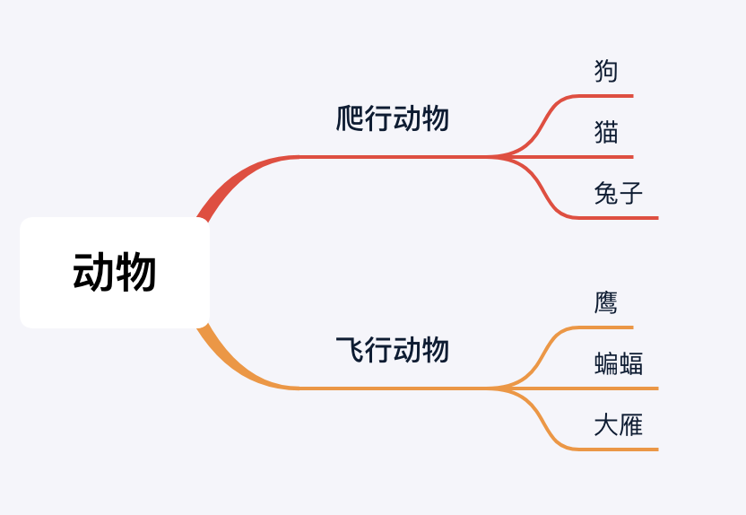

继承
01. 继承的定义和术语
继承是为了创建和现有类功能类似的新类。新类可在现有类的基础上，添加特有的属性或方法。
- 子类可以直接享受父类已经封装好的方法，无需再次开发；
- 子类拥有父类的全部属性和方法
1.1 相关术语
B类是A类的子类，A类是B类的父类，B类从A类继承 或派生；
A类是基类或超类，B类是派生类
1.2 继承的传递性
C类从B类继承，B类又从A类继承- 那么
C类就具有B类和A类的所有属性和方法
子类 拥有 父类 以及 父类的父类 中封装的所有 属性 和 方法
02. 单继承
子类继承父类，或父类的父类，且每个子类只继承一个父类的继承形式是单继承。

class Animals:
def say(self):
print("动物类")
class FlyAnimals(Animals):
def fly(self):
print("会飞")
class Bird(FlyAnimals):
def eat(self):
print("啄虫")
ying = Bird()
ying.eat()
ying.fly()
ying.say()
>>>
啄虫
会飞
动物类
以上代码演示，Bird 继承FlyAnimals ，还继承Animals 。 所以Bird 拥有两个父类的所有方法。
03. 多继承
子类同时继承多个父类，以, 隔开的方式是多继承
- 使用多继承经常需要面临的问题是，多个父类包含同名的方法。
- 对于这种情况，python的处理逻辑是按照继承类从左到右的方式次序决定，即排在前面父类中的类方法会覆盖排在后面父类中的同名类方法。
class Animals:
def fly(self):
print("动物类")
class FlyAnimals:
def fly(self):
print("会飞")
class Bird(Animals, FlyAnimals):
def eat(self):
print("啄虫")
ying = Bird()
ying.fly()
>>>
动物类
04. 父类方法重写
4.1 父类方法重写
如果继承后子类方法的实现和父类方法实现完全不同，需要在子类内部对父类方法进行重写
- 重写的方法是重新定义父类同名的方法
- 在同名方法内编写方法实现
class Dog:
def bark(self):
print("汪汪")
class XiaoTianQuan(Dog):
def bark(self):
print("嗷呜~")
xiaotianquan=XiaoTianQuan()
xiaotianquan.bark()
>>>
嗷呜~
如果有特殊需求，比如在重写父类方法后，还是需要调用父类的方法，可以使用父类名.父类方法（子类对象）的方式
class Dog:
def bark(self):
print("汪汪")
class XiaoTianQuan(Dog):
def bark(self):
print("嗷呜~")
xiaotianquan=XiaoTianQuan()
Dog.bark(xiaotianquan)
>>>
汪汪
4.2 父类方法扩展-super类
在使用类的继承后，子类在父类的基础上，有其他的扩展实现（即父类的实现比较少，子类有特殊需求），这种情况不需要重写父类方法，可以使用super 类实现父类方法扩展
class Dog:
def bark(self):
print("汪汪")
class XiaoTianQuan(Dog):
"""哮天犬不仅会汪汪叫，还会嗷呜叫"""
def bark(self):
super().bark()
print("嗷呜~")
xiaotianquan=XiaoTianQuan()
xiaotianquan.bark()
>>>
汪汪
嗷呜~
05. MRO算法
python内提供了内置属性__mro__ 可以查看方法的搜索顺序
- MRO 是
method resolution order，主要用于 在多继承时判断 方法、属性 的调用 路径
class A:
def say(self):
print("A")
class B(A):
def say(self):
print("B")
class C(A):
def say(self):
print("C")
class D(B,C):
def say(self):
print("D")
demo = D()
demo.say()
for i in D.__mro__:
print(i,end="\n")
>>>
D
<class '__main__.D'>
<class '__main__.B'>
<class '__main__.C'>
<class '__main__.A'>
<class 'object'>